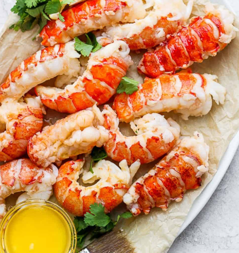
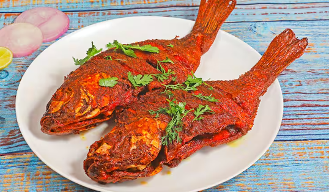
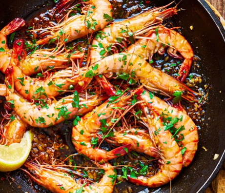
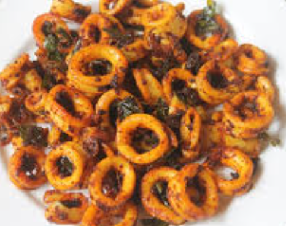
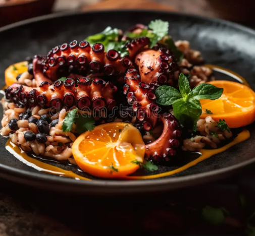

HOME | MENU | CONTACT | ADMINISTRATION
|  |  |  |  |  |
|
|
|
|
|
seafood was less prestigious than other animal meats, and was often seen as merely an alternative to meat on fast days.
Still, seafood was the mainstay of many coastal populations.Over 33,000 species of fish and many more marine invertebrate species have been identified.
Bromophenols, which are produced by marine algae, give marine animals an odor and taste that is absent from freshwater fish and invertebrates.
"Enjoy a taste of Italy at Bella's, where our authentic recipes and cozy atmosphere make every meal special."